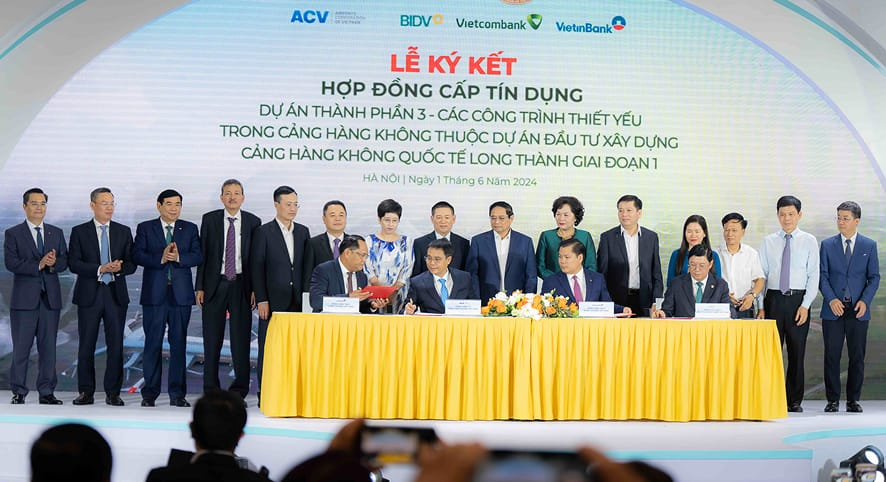

3CGAME ký hợp đồng với đối tác ra mắt sản phẩm game Chân Long Mobile - 3C
10:00 AM | 26/01/2025Heading 1
Việt Nam phải duy trì tăng trưởng cao, bền vững liên tục tới 2045, để vượt qua bẫy thu nhập trung bình như Nhật Bản, Hàn Quốc, Trung Quốc, theo Thủ tướng Phạm Minh Chính.
Sáng 21/2, Thủ tướng Phạm Minh Chính chủ trì hội nghị đầu tiên giữa Chính phủ và các địa phương sau kỳ họp bất thường thứ 9 của Quốc hội về kiện toàn bộ máy Chính phủ. Tại kỳ họp này, Quốc hội đã thông qua mục tiêu tăng trưởng kinh tế năm nay đạt 8% trở lên, quy mô GDP khoảng trên 500 tỷ USD.
Thủ tướng Phạm Minh Chính nói việc thực hiện mục tiêu tăng trưởng là yếu tố quan trọng để quyết định quy mô nền kinh tế, thu nhập bình quân đầu người, xếp hạng của nền kinh tế Việt Nam trên thế giới.
"Không còn cách nào khác, chúng ta phải duy trì tăng trưởng cao, bền vững liên tục từ nay tới 2045", ông nói, khẳng định việc này sẽ giúp Việt Nam vượt qua bẫy thu nhập trung bình, đạt các mục tiêu chiến lược trong kỷ nguyên mới. Ông cũng nhắc lại "Đảng đã chỉ đạo, Chính phủ thống nhất, Quốc hội đồng tình, nhân dân ủng hộ, Tổ quốc mong đợi, thì chỉ bàn làm, không bàn lùi".
Heading 2
Việt Nam phải duy trì tăng trưởng cao, bền vững liên tục tới 2045, để vượt qua bẫy thu nhập trung bình như Nhật Bản, Hàn Quốc, Trung Quốc, theo Thủ tướng Phạm Minh Chính.
Sáng 21/2, Thủ tướng Phạm Minh Chính chủ trì hội nghị đầu tiên giữa Chính phủ và các địa phương sau kỳ họp bất thường thứ 9 của Quốc hội về kiện toàn bộ máy Chính phủ. Tại kỳ họp này, Quốc hội đã thông qua mục tiêu tăng trưởng kinh tế năm nay đạt 8% trở lên, quy mô GDP khoảng trên 500 tỷ USD.
Thủ tướng Phạm Minh Chính nói việc thực hiện mục tiêu tăng trưởng là yếu tố quan trọng để quyết định quy mô nền kinh tế, thu nhập bình quân đầu người, xếp hạng của nền kinh tế Việt Nam trên thế giới.
"Không còn cách nào khác, chúng ta phải duy trì tăng trưởng cao, bền vững liên tục từ nay tới 2045", ông nói, khẳng định việc này sẽ giúp Việt Nam vượt qua bẫy thu nhập trung bình, đạt các mục tiêu chiến lược trong kỷ nguyên mới. Ông cũng nhắc lại "Đảng đã chỉ đạo, Chính phủ thống nhất, Quốc hội đồng tình, nhân dân ủng hộ, Tổ quốc mong đợi, thì chỉ bàn làm, không bàn lùi".
Thủ tướng Phạm Minh Chính phát biểu tại hội nghị ngày 21/2. Ảnh: VGP
Bẫy thu nhập trung bình xảy ra khi một nước bị mắc kẹt trong ngưỡng thu nhập bình quân đầu người cơ bản từ 4.000 đến 6.000 USD mỗi năm. Mức này đạt được trước đó nhờ có nguồn tài nguyên và những lợi thế ban đầu và thị trường lao động kém sôi động.
Kinh nghiệm quốc tế và thống kê mới nhất của Ngân hàng Thế giới (WB) cho thấy có 34 nền kinh tế thoát khỏi bẫy thu nhập trung bình để trở thành nước có thu nhập cao từ 1990 đến nay, trong khi có 108 nước chưa vượt qua được. Quy mô nền kinh tế Việt Nam đến hết 2024 đạt hơn 470 tỷ USD, thu nhập bình quân đầu người hơn 4.700 USD.
Thủ tướng khẳng định "nếu chỉ tăng trưởng bình quân 7% mỗi năm sẽ khó đạt mục tiêu nói trên". Ông dẫn các nền kinh tế trở thành nước thu nhập cao đều duy trì mức tăng trưởng trên dưới 10% trong khoảng 30 năm. Cụ thể, Nhật Bản tăng trưởng 11,5% một năm giai đoạn 1951-1973; Hàn Quốc tăng trưởng trên 9,6% mỗi năm từ 1963-1996.
Tương tự, Trung Quốc tăng trưởng khoảng 10% mỗi năm giai đoạn 1978-2011; Đài Loan (Trung Quốc) tăng trưởng 8,9% trong giai đoạn 1952- 1989; Singapore tăng trưởng 8,5%/năm giai đoạn 1961-1997.
Theo tính toán, Việt Nam đạt tốc độ tăng trưởng bình quân 6,4% trong gần 40 năm Đổi mới (từ năm 1986 đến nay), vì vậy giai đoạn tới phải tăng tốc hơn nữa mới đạt mục tiêu chiến lược đề ra đến năm 2045, là nhiệm vụ quan trọng, đòi hỏi sự vào cuộc quyết liệt, đồng bộ.
Những dẫn chứng này, theo Thủ tướng, để thấy chặng đường phía trước của Việt Nam còn rất nhiều khó khăn.
Để đạt mục tiêu, ông yêu cầu tất cả bộ ngành, địa phương, doanh nghiệp trong và ngoài nước, kinh tế tập thể, kinh tế tư nhân đều phải đạt tăng trưởng trên 8%.
Cùng với đó, nhà điều hành cũng cần giữ ổn định kinh tế vĩ mô, kiểm soát lạm phát, bảo đảm an sinh xã hội. Tức là, Việt Nam sẽ không hy sinh tiến bộ và công bằng xã hội, môi trường để chạy theo tăng trưởng kinh tế đơn thuần.
Lãnh đạo Chính phủ cũng cho rằng Việt Nam phải nâng hiệu quả đầu tư, cải thiện tỷ lệ giải ngân vốn đầu tư công. Ông yêu cầu các bộ ngành, địa phương phải có nguồn lực về thể chế, vốn, công nghệ, con người để khai thác các động lực, làm đòn bẩy cho tăng trưởng.
Báo cáo thêm về các giải pháp, Thứ trưởng Kế hoạch và Đầu tư Trần Quốc Phương cho rằng Việt Nam cần tập trung cải cách hành chính, giải quyết nhanh các thủ tục đầu tư, tháo gỡ cho doanh nghiệp, dự án. Nhà điều hành phải có các cơ chế, chính sách thí điểm, đặc thù, quy định mới, đột phá, "luồng xanh" cho các dự án trong lĩnh vực công nghệ cao.
Ông đề xuất các bộ ngành, địa phương tập trung rà soát, hoàn thiện các quy định không còn phù hợp, chồng chéo hoặc chưa đầy đủ. Các cấp, ngành tiếp tục xác định giải ngân vốn đầu tư công là nhiệm vụ chính trị quan trọng hàng đầu.
Bên cạnh đó, cơ quan quản lý cần xây dựng các cơ chế, chính sách về thuế, tín dụng để hỗ trợ tăng sức mua, kích cầu tiêu dùng, du lịch nội địa. Việc này nhằm đạt mục tiêu tổng mức bán lẻ hàng hóa và doanh thu dịch vụ tiêu dùng năm 2025 tăng khoảng 12% trở lên, thu hút 22-23 triệu lượt khách du lịch quốc tế, 120-130 triệu lượt khách du lịch nội địa.
Ngoài ra, Việt Nam phải khai thác hiệu quả cơ hội từ 17 FTA đã ký kết, đa dạng hóa thị trường xuất khẩu, tạo mọi điều kiện thuận lợi để các chuyên gia, nhất là các chuyên gia giỏi người nước ngoài và người Việt Nam ở nước ngoài, làm việc và phát triển khoa học, đổi mới sáng tạo cho Việt Nam.
Bài viết liên quan
-
10:00 AM | 26/01/2025
3CGAME ký hợp đồng với đối tác ra mắt sản phẩm game Chân Long Mobile - 3C
-
 10:00 AM | 26/01/2025
10:00 AM | 26/01/20253CGAME ký hợp đồng với đối tác ra mắt sản phẩm game Chân Long Mobile - 3C
-
 10:00 AM | 26/01/2025
10:00 AM | 26/01/20253CGAME ký hợp đồng với đối tác ra mắt sản phẩm game Chân Long Mobile - 3C
-
10:00 AM | 26/01/2025
3CGAME ký hợp đồng với đối tác ra mắt sản phẩm game Chân Long Mobile - 3C